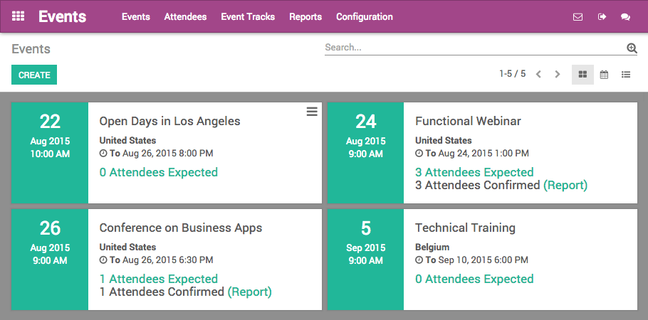

Design classy event web pages
Publish an event Web page has never been so simple
Bring to life your event in a few clicks with our building blocks approach. Forget about code and quickly turn your idea into visuals.

Great events offer great content
Organize tracks and manage speakers
Add a talk proposal form on your event websites to allow visitors to submit talks and speakers. Organize the validation process of every talk, and schedule them easily.